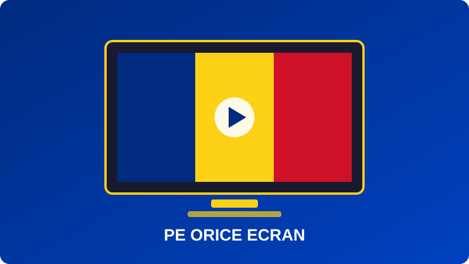

Daca locuiesti in afara tarii si vrei sa vezi canalele de acasa, probabil ai cautat deja evo iptv. Tot mai multi romani renunta la cablu si parabola si aleg IPTV, pentru ca e simplu, flexibil si merge pe televizor, telefon sau tableta, oriunde ai internet.
In acest ghid explicam ce inseamna evo iptv, ce canale poti primi, ce viteza de internet ai nevoie, cum configurezi totul pas cu pas si cum eviti listele gratuite nesigure. Totul este scris pentru romani, cu accent pe diaspora, pe canale romanesti si pe suport in limba ta.
La final ai si un test gratuit prin WhatsApp, ca sa verifici calitatea inainte de abonare. Daca esti la inceput, citeste mai intai iptv romania, apoi revino aici.
Cuprins
- Ce este evo iptv?
- Ce canale romanesti poti urmari
- Avantajele fata de cablu si satelit
- Pe ce dispozitive functioneaza
- Cum configurezi pas cu pas
- Ce internet ai nevoie
- Liste gratuite sau abonament verificat
- De ce sa alegi Romania IPTV
- Evo iptv pentru romanii din diaspora
- Sfaturi pentru o transmisie fara intreruperi
- Greseli frecvente de evitat
- Este legal si sigur?
- Comparatie rapida: cablu, satelit si IPTV
- Cum alegi un furnizor bun
- Cum optimizezi Wi-Fi-ul acasa
- Ce emisiuni si programe urmaresc romanii
- Probleme frecvente si solutii rapide
- Cat costa si ce include abonamentul
- Intrebari frecvente
- Concluzie
Ce este evo iptv?
Cand cauti evo iptv, vrei de fapt un mod simplu de a vedea televiziunea romaneasca pe orice ecran, fara parabola si fara contracte lungi. Prin IPTV, canalele ajung la tine ca flux video prin internet, iar tu le vezi intr-o aplicatie de player.
Cum functioneaza IPTV
Furnizorul transmite canalele pe serverele lui. Tu primesti datele de acces, le introduci in aplicatie si lista de canale se incarca automat. Pe scurt, evo iptv inseamna acces la TV prin internet, nu prin cablu.
De ce il cauta romanii
Pentru romanii din Germania, Italia, Spania sau Marea Britanie, dorul de acasa se vede in programele TV. Cu Romania IPTV ai canale romanesti, filme, seriale si sport intr-un singur abonament. Pentru o introducere completa, citeste iptv romania.
Ce canale romanesti poti urmari
Un pachet bun de evo iptv trebuie sa aiba lista larga de canale romanesti, nu doar cateva posturi. Lista exacta difera, deci cere varianta actuala pe WhatsApp.
Generaliste si divertisment
Pro TV, Antena 1, Kanal D, Prima TV si Acasa TV sunt printre cele mai urmarite. Gasesti telenovele, emisiuni de divertisment si seriale.
Stiri si sport
Digi24, Antena 3 CNN, Realitatea si canalele Digi Sport completeaza oferta. Daca iti plac transmisiile sportive, vezi si eurosport iptv si espn iptv.
Filme, desene si documentare
Familia intreaga isi gaseste canalul preferat: desene pentru copii, documentare, muzica si filme.
Avantajele fata de cablu si satelit
Cablul si satelitul au pachete rigide, taxe de instalare si contracte pe 12-24 luni. evo iptv schimba regulile.
Flexibilitate si pret
Platesti doar abonamentul, fara echipament scump si fara tehnician. Poti reinnoi sau opri cand vrei.
Mobilitate
Te muti in alta tara? Iei contul cu tine. Despre acoperirea europeana, citeste euro iptv.
Calitate HD si 4K
Cu internet bun primesti imagine HD stabila si, acolo unde exista, 4K.
Pe ce dispozitive functioneaza
Aceleasi date de acces merg pe mai multe aparate, in limita conexiunilor din abonament.
Smart TV si box Android
Cea mai buna experienta pe ecran mare. Un box Android costa putin; vezi android box iptv.
Telefon, tableta si calculator
Perfect pentru a urmari jurnalul de seara in deplasare sau un film in pauza de pranz.
Fire TV Stick
Este o alegere populara si usor de instalat, potrivita pentru orice televizor cu intrare HDMI.

Cum configurezi pas cu pas
Configurarea evo iptv dureaza cateva minute si nu cere cunostinte tehnice.
- Scrie-ne pe WhatsApp si cere un test.
- Primesti datele de acces si lista de canale.
- Instaleaza o aplicatie de player pe dispozitiv.
- Introdu datele si asteapta incarcarea listei.
- Alege un canal si porneste transmisia.
Ghid TV (EPG)
Pentru programul emisiunilor, activeaza ghidul electronic. Detalii in articolul epg iptv.
Setari recomandate
Foloseste cablu de retea unde poti, actualizeaza aplicatia si evita VPN-ul daca nu este necesar.
Ce internet ai nevoie
Calitatea imaginii depinde in primul rand de conexiune. Iata valorile orientative pentru evo iptv:
| Calitate | Viteza minima | Recomandare |
|---|---|---|
| SD | 5 Mbps | Telefon |
| HD | 10 Mbps | Smart TV |
| 4K | 25 Mbps | Cablu de retea |
Cum testezi viteza
Ruleaza un test de viteza chiar pe dispozitivul pe care vezi TV. Daca rezultatul e sub valorile de mai sus, apropie-te de router sau trece pe cablu.
Liste gratuite sau abonament verificat
Multi cauta liste gratuite pentru evo iptv, dar ele vin cu probleme. Canalele cad des, lista se schimba fara anunt si nu ai niciun suport.
Ce primesti cu un abonament
Stabilitate, canale actualizate, ghid TV si ajutor pe WhatsApp. Pentru comparatii cu alti furnizori europeni, vezi greek iptv si tilaa iptv.
De ce sa alegi Romania IPTV
Daca vrei evo iptv potrivit pentru romani, conteaza accentul pe continut local. Romania IPTV este construit pentru audienta romaneasca din tara si din diaspora.
Suport in limba romana
Raspundem pe WhatsApp, in limba ta, cu pasi clari pentru fiecare dispozitiv.
Test gratuit
Nu platesti nimic pana nu esti multumit de imagine. Cere testul si decide dupa ce vezi calitatea.
Canale actualizate
Lista este verificata constant, iar canalele cazute sunt inlocuite rapid.
Evo iptv pentru romanii din diaspora
Cu evo iptv nu mai depinzi de pachetele locale din tara in care locuiesti. Poti vedea aceleasi emisiuni ca acasa, in aceeasi zi.
Pentru familii
Copiii pot vedea desene in limba romana, iar parintii pot urmari stirile si telenovelele preferate.
Pentru cei mutati des
Contul merge in orice tara cu internet bun, deci nu pierzi nimic la o noua mutare.
Sfaturi pentru o transmisie fara intreruperi
Cateva obiceiuri simple fac diferenta intre o imagine fluida si una care se blocheaza.
- Foloseste cablu de retea pe televizorul principal.
- Inchide descarcarile si alte aplicatii in timpul vizionarii.
- Actualizeaza periodic player-ul.
- Reporneste routerul o data pe luna.
- Pastreaza datele de acces intr-un loc sigur.
Daca ai probleme, scrie-ne si te ajutam sa gasesti cauza.
Greseli frecvente de evitat
Alegerea doar dupa pret
Un pret foarte mic ascunde adesea instabilitate. Cu evo iptv conteaza raportul dintre pret, canale si suport.
Ignorarea vitezei de internet
Multe probleme vin din Wi-Fi slab, nu din serviciu.
Folosirea mai multor aparate peste limita
Respecta numarul de conexiuni din abonament, altfel transmisia se poate opri.
Este legal si sigur?
Tehnologia IPTV este legala. Important este sa alegi un furnizor transparent si sa eviti sursele necunoscute. Nu introduce niciodata date de card pe site-uri dubioase si cere intotdeauna un test inainte de plata.
Comparatie rapida: cablu, satelit si IPTV
| Criteriu | Cablu | Satelit | IPTV |
|---|---|---|---|
| Instalare | Tehnician | Parabola | Doar aplicatie |
| Contract | 12-24 luni | 12 luni | Flexibil |
| Mobilitate | Nu | Nu | Da, oriunde |
| Canale romanesti | Putine | Limitat | Lista larga |
Dupa cum se vede, evo iptv castiga la flexibilitate si la acces la canalele din Romania.
Cum alegi un furnizor bun
Inainte sa platesti pentru evo iptv, verifica cateva lucruri simple. Un furnizor serios raspunde repede, ofera test si explica clar ce include abonamentul.
Lista de verificare
- Exista test gratuit, fara card?
- Lista de canale romanesti este actuala si completa?
- Ai suport pe WhatsApp in limba romana?
- Poti folosi serviciul pe mai multe dispozitive?
- Pretul este clar, fara taxe ascunse?
Semnale de alarma
Fii atent la oferte prea bune ca sa fie adevarate, la lipsa oricarui contact si la cereri de plata prin metode neobisnuite. Un serviciu evo iptv de incredere nu te grabeste niciodata sa platesti fara sa testezi.
Cat dureaza activarea
De obicei, dupa confirmarea platii primesti datele de acces in cateva minute, iar dupa instalarea aplicatiei poti urmari canalele imediat.
Cum optimizezi Wi-Fi-ul acasa
Cele mai multe plangeri legate de evo iptv vin din reteaua de acasa, nu din serviciu. Cateva ajustari simple rezolva majoritatea problemelor.
Pozitia routerului
Pune routerul in camera principala, la inaltime, departe de aparate care produc interferente, cum ar fi cuptorul cu microunde sau telefoanele fara fir.
Banda de 5 GHz
Daca routerul tau suporta 5 GHz, conecteaza televizorul sau boxul la aceasta banda. Este mai rapida si mai putin aglomerata decat 2,4 GHz, mai ales in blocuri.
Cablu de retea
Pentru televizorul principal, un cablu Ethernet ramane cea mai stabila solutie. Elimina intreruperile si reduce intarzierea imaginii.
Ce emisiuni si programe urmaresc romanii
Cine cauta evo iptv vrea, de multe ori, sa nu piarda programele care conteaza. Iata ce urmaresc cel mai des romanii din diaspora.
Telenovele si seriale
Serialele de la Pro TV, Antena 1 si Kanal D aduna milioane de privitori in fiecare seara. Cu IPTV le poti vedea in aceeasi zi, la aceeasi ora ca in Romania.
Jurnale si dezbateri
Stirile de seara si emisiunile de dezbatere ii tin pe romanii plecati aproape de ce se intampla acasa, in timp real.
Emisiuni de weekend si divertisment
Show-urile de talente, emisiunile culinare si programele de divertisment fac din seara de weekend un moment de familie, chiar daca esti la mii de kilometri de casa.
Programe pentru copii
Desenele animate in limba romana ajuta copiii crescuti in strainatate sa pastreze limba vie, un motiv in plus sa alegi un serviciu cu canale locale.
Probleme frecvente si solutii rapide
Chiar si cel mai bun serviciu evo iptv poate avea mici probleme, de obicei usor de rezolvat. Iata cele mai intalnite situatii.
Imaginea se opreste sau se blocheaza
Verifica viteza internetului, reporneste routerul si inchide celelalte aplicatii care consuma banda. Daca problema continua, schimba serverul sau scrie-ne.
Lista de canale nu se incarca
Verifica daca ai introdus corect datele de acces, fara spatii in plus. Apoi sterge lista din aplicatie si adaug-o din nou.
Nu se aude sunetul sau este decalat
Schimba pistele audio din player sau reporneste aplicatia. Pe unele televizoare ajuta si actualizarea software-ului.
Ghidul TV nu apare
Activeaza sursa EPG din setari si asteapta cateva minute, pentru ca datele se descarca la prima pornire. Pentru ajutor detaliat, scrie-ne pe WhatsApp si primesti pasii potriviti dispozitivului tau.
Cat costa si ce include abonamentul
Pretul pentru evo iptv depinde de durata abonamentului si de numarul de conexiuni. In general, abonamentele pe 6 sau 12 luni au un cost lunar mai mic decat cele pe o luna, iar familiile pot alege mai multe conexiuni simultane.
Ce ar trebui sa includa
Canale romanesti HD, ghid TV, filme si seriale la cerere, suport pe WhatsApp si actualizari continue ale listei, fara costuri suplimentare.
Intrebari frecvente
Ce inseamna evo iptv?
Este un termen cautat des pentru servicii IPTV care livreaza canale TV prin internet, fara antena sau parabola. Numele difera, dar principiul este acelasi.
Este evo iptv potrivit pentru romanii din diaspora?
Da, daca pachetul include canale romanesti precum Pro TV, Antena 1, Kanal D si Digi Sport. Cere lista actuala pe WhatsApp inainte de abonare.
Ce viteza de internet am nevoie?
Minimum 5 Mbps pentru SD, 10 Mbps pentru HD si 25 Mbps pentru 4K. Pentru sport live recomandam conexiune prin cablu de retea.
Pe ce dispozitive pot folosi evo iptv?
Pe Smart TV, box Android, Fire TV Stick, telefon, tableta si calculator, in limita conexiunilor incluse in abonament.
De ce se blocheaza imaginea?
De obicei din cauza internetului slab, a Wi-Fi-ului aglomerat sau a unei aplicatii invechite. Foloseste cablu, actualizeaza player-ul si scrie-ne pentru ajutor.
Sunt sigure listele gratuite evo iptv?
Nu intotdeauna. Listele gratuite cad des, au putine canale si pot contine linkuri riscante. Un furnizor verificat este varianta stabila.
Este legal un serviciu IPTV?
Tehnologia IPTV este legala. Alege un furnizor serios, cu suport real, si evita sursele necunoscute.
Exista test gratuit?
Da, poti cere un test pe WhatsApp, fara card si fara contract, ca sa verifici calitatea imaginii inainte de abonament.
Testeaza gratuit canalele romanesti
Scrie-ne pe WhatsApp si primesti acces de test, fara card si fara contract.
Cere testul pe WhatsAppConcluzie
Pe scurt, evo iptv este varianta moderna de a urmari televiziunea romaneasca oriunde te afli. Ai nevoie de internet stabil, un dispozitiv compatibil si un furnizor de incredere.
Daca vrei sa incerci, scrie-ne pe WhatsApp si cere un test cu Romania IPTV. Mai multe ghiduri gasesti in blog.